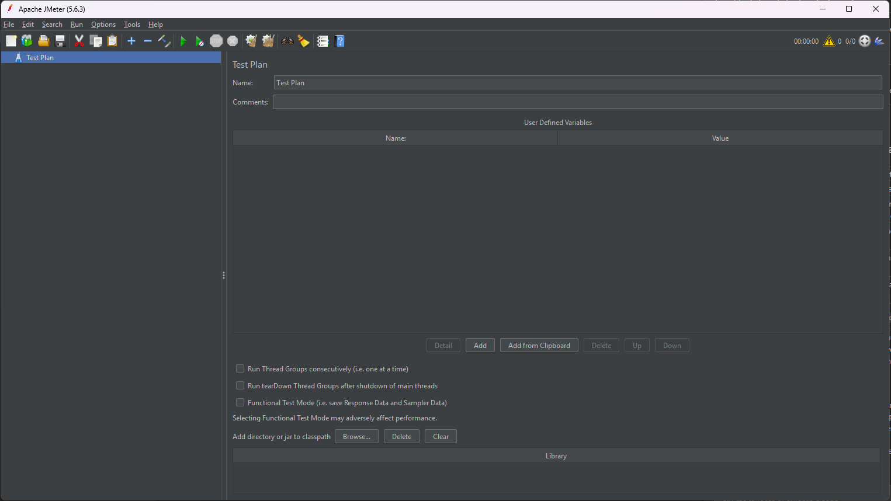

1. Install Tools¶
Before starting performance testing, you need the following tools set up on your machine.
Required Tools¶
Google Chrome¶
Chrome is needed for both Fiddler proxy setup and the Blazemeter recording extension. Install it first if not already on your machine.
Download: https://www.google.com/chrome/
Apache JMeter¶
JMeter is the core tool for creating and running performance tests.
Steps:
- Install Java JDK 21 (recommended for latest Groovy support and to avoid deprecation issues with plugins)
- Download from https://adoptium.net/ or https://www.oracle.com/java/technologies/downloads/
- Download JMeter from https://jmeter.apache.org/download_jmeter.cgi
- Extract the zip file to your preferred location
- Add JMeter
bin/folder to your system PATH environment variable - This allows you to run
jmeterfrom any terminal location - Windows: System Properties > Environment Variables > Edit
Path> Add your JMeterbinpath (e.g.,C:\apache-jmeter-5.6.3\bin) - Run
jmeterfrom terminal or runjmeter.batfrom thebin/folder

Verify: JMeter GUI should open with an empty Test Plan as shown above.
Fiddler¶
Fiddler is used to capture and inspect HTTP/HTTPS traffic. This is essential for correlation work later.
By default, Fiddler captures all traffic from your machine, which creates a lot of noise. To only capture traffic from your test flow, we set up Fiddler as a proxy and launch Chrome through that specific port.
Steps:
- Download Fiddler Classic from https://www.telerik.com/fiddler/fiddler-classic
- Install and launch Fiddler
- Enable HTTPS decryption: Tools > Options > HTTPS > Check "Decrypt HTTPS traffic"
- Fiddler will prompt you to install its root certificate - click Yes to trust it (requires admin permission)
- This is required for Fiddler to decrypt HTTPS traffic
- Without it, HTTPS requests will show as tunnels and you won't see the actual request/response content
-
If you missed the prompt, go to Tools > Options > HTTPS > click Actions > Trust Root Certificate
-
Note the proxy port: Tools > Options > Connections (default is
8888) - Launch Chrome using Fiddler's proxy to capture only Chrome traffic:
Note: If
chrome.exeis not in your PATH, use the full path instead:
Tip: Create a shortcut with the proxy flag so you don't have to type it every time.
Verify: Open the proxied Chrome, visit any website, and confirm Fiddler captures only that traffic.
Blazemeter Chrome Extension¶
Blazemeter extension records your browser actions and exports them as a JMeter .jmx file.
Steps:
- Open Chrome Web Store and search for "Blazemeter"
- Install the BlazeMeter | The Continuous Testing Platform extension
- Create a free Blazemeter account (required to export
.jmxfiles) - Pin the extension to your toolbar for easy access
- Configure Advanced Options - click the extension icon > Advanced Options and make sure:
- Record Ajax Requests is enabled (not enabled by default - we need this to capture page navigations and dynamic content)
- Randomize Recorded Think Time is disabled (we will configure proper timers later in script enhancement)
Verify: Click the extension icon and confirm you see the recording controls with the correct settings.
Optional Tools¶
These are not required to get started but are useful for advanced workflows.
Python¶
Used for test data preparation - generating data, splitting CSV files across machines for distributed testing.
Steps:
- Download Python from https://www.python.org/downloads/
- During install, check "Add Python to PATH"
Verify: Open terminal and run python --version
InfluxDB + Grafana¶
Used for real-time monitoring of JMeter test results via Backend Listener. Covered in detail in Section 11 - Backend Listener.